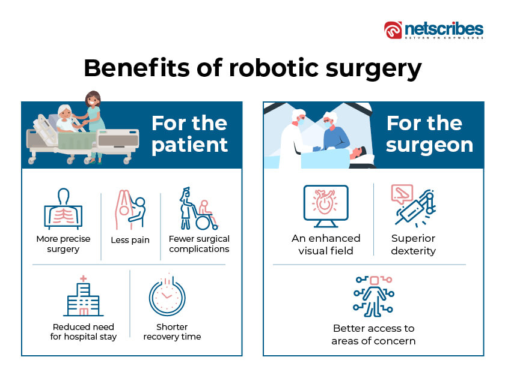

Robotic surgery finds utility across various medical specialties, including urology, general surgery, and surgical
oncology. In the context of a prevailing scarcity of resources and personnel in Low and Middle-Income Countries
(LMICs), incorporating robotics into surgery has the potential to alleviate issues like physician burnout, surgical
site infections, and prolonged hospital stays. Nevertheless, challenges such as the absence of tactile feedback and
socioeconomic barriers, including high implementation costs and a shortage of trained staff, may hinder widespread
accessibility and utilization. Addressing these challenges through targeted enhancements, such as increased financial
and technical support to LMICs, could enhance accessibility and transform the surgical experience for both surgeons
and patients in these regions. This review delves into the evolutionary trajectory of robotic surgery, highlighting
obstacles and proposing recommendations to foster broader implementation and enhance patient outcomes.
Introduction
While robots have been in existence for an extended period, their integration into the field of medicine is
relatively recent. The 1980s marked a surge in interest in using robots for minimally invasive surgery. Despite
the widespread adoption of laparoscopy during that period, the procedures were somewhat restricted compared to the
perceived potential of robotic surgery. Concurrently, in the 1980s, the Ames Research Centre of NASA initiated work
on the concept of telepresence in surgery. Stanford University joined these efforts in the 1990s, leading to the
creation of a technologically advanced tele manipulator that laid the foundation for subsequent systems.
In 1994, AESOP (Computer Motion, Inc., Goleta, CA) received FDA approval. AESOP combined a tele manipulator with
a foot pedal, which was later replaced by voice control. However, during that period, the functionality of these
systems was somewhat limited.
The Future of Surgical Robotics
The Future of Surgical Robotics
Future autonomous surgical robots will have ability to “see,” “think,” and “act” without active human intervention to
achieve a predetermined surgical goal safely and effectively. Three parameters define the task of an autonomous
surgical robot: mission complexity, environmental difficulty, and human independence. To enable this, the autonomous
robot possesses visual and physical sensors that perceive the environment, a central processor that receives sensory
input and calculates outputs, and mechanical actuators that permit physical task completion. Due to the highly
deformable nature of soft tissue environment susceptible to rupture, and the delicacy of tissues, achieving a
clinically viable, versatile autonomous surgical device will require considerable development and integration of
control algorithms, robotics, computer vision, and smart sensor technology, in addition to extensive trial periods.
The robot must also be taught how to perform surgery. Proposed methods to “teach” the robots are by directly
programming it (explicit learning), or by having the robot directly observing a surgeon or video (implicit learning);
the robot may even train in virtual reality. Nevertheless, mimicking a human surgeon judge all relevant sensory inputs
(i.e., visual, and tactile features of the surgical field) and positional information, but also a proceed to achieve
the surgical goal. Consequently, it is unlikely that implicit or explicit techniques can be used exclusively,
reinforcement and modification by domain experts (i.e., human surgeons) will be required.
Why are Robotics Beneficial?
Robotic surgery offers many benefits to patients compared to open surgery, including:
- Shorter hospitalization
- Reduced pain and discomfort
- Faster recovery time and return to normal activities.
- Smaller incisions, resulting in reduced risk of infection.
- Reduced blood loss and transfusions
- Minimal scarring
When performing robotic surgery using the da Vinci Surgical System:
- The surgeon works from a computer console in the operating room, controlling miniaturized instruments mounted on three
robotic arms
- The surgeon looks through a 3-D camera attached to a fourth robotic arm, which magnifies the surgical site.
- The surgeon’s hand, wrist and finger movements are transmitted through the computer console to the instruments attached
to the robot.
Surgical procedures performed with the aid of a robot is sometimes marketed as the “best” form of surgery.
But a recent review of 50 randomized controlled trials, testing robot-assisted surgeries against conventional methods
for abdominal or pelvic procedures, suggests that while there may be some benefits to robotic surgery, any advantages
over other approaches are modest.

Figure 1: shows the benefits of Surgical Robots
The da Vinci Surgical System
Firstly, the surgeons operate the system using a console that provides a 3D, high-definition view of the surgical
site.
The console is used with a hand and a foot control that allows the surgeon to manipulate and use the robotic arms and
instruments. Next, the system has three or four robotic arms, with each arm holding a different surgical instrument.
The robotic instruments are controlled by the surgeon using the console.
The endoscope is a tiny camera that provides a much in-depth detailed high-resolution 3D view of the surgical site.
The robotic arms have a specialized instrument that mimics the movements of the surgeon's hands with a high degree of
precision.
In conclusion, the surgeon operates from the console, controlling the robotic arms through hand and foot controls.
The system converts the surgeon's motions into precise movements of the instruments. The system's 3D visualization
and increased dexterity are intended to enhance surgical precision, enabling smaller incisions, and minimizing patient
trauma.
Figure 1: shows the da Vinci Surgical System
Can Surgical Robots be Dangerous?
Concerns regarding patient safety, surgeon experience, evidence, and cost are voiced by some experts.
For example, in June 2021, researchers published findings from a retrospective study, indicating that
current robotic platforms do not offer a clear advantage. Given that robotic-assisted surgery tends to
be more costly and prolong surgical procedures, the apparent lack of benefit warrants thoughtful consideration.
Furthermore, in August 2021, the US Food and Drug Administration (FDA) issued a safety communication to remind
patients and healthcare providers that the safety and effectiveness of robotic-assisted surgeries for mastectomy
procedures, as well as for the prevention or treatment of breast cancer, have not been established.


 Figure 1: shows the da Vinci Surgical System
Figure 1: shows the da Vinci Surgical System